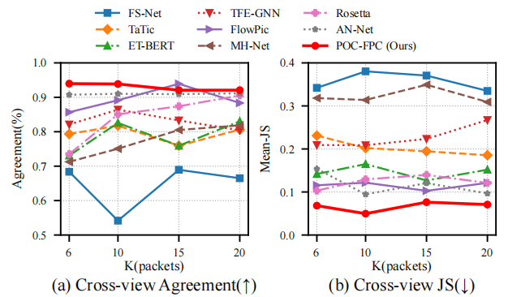
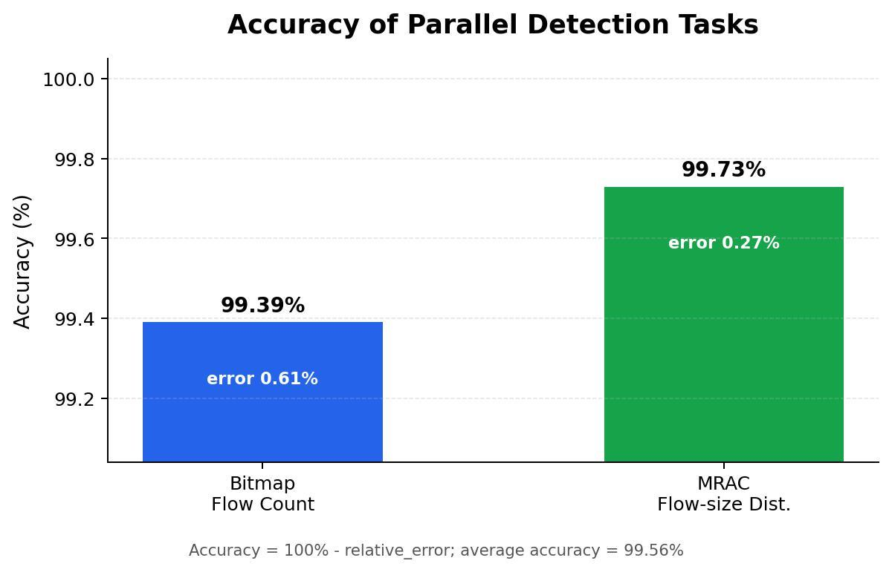
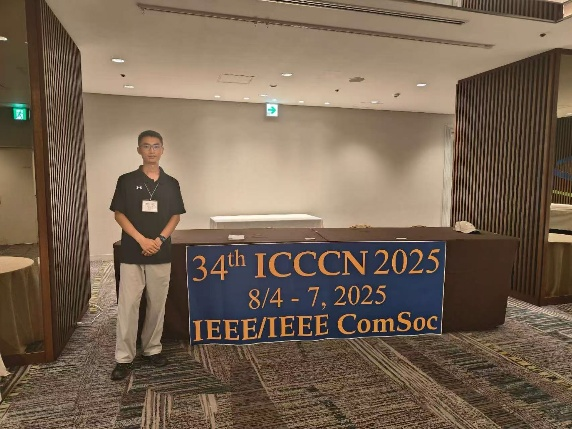

分布式在网程序验证研究成果 Procurator 在 ACM SIGCOMM 2026 发表
厦门大学、北京邮电大学等单位的研究人员合作提出 Procurator，用于验证分布式在网程序的正确性。该框架将多个交换机程序之间的交互纳入验证范围，帮助在部署前发现问题。

项目进展 / 学术交流
厦门大学、北京邮电大学等单位的研究人员合作提出 Procurator，用于验证分布式在网程序的正确性。该框架将多个交换机程序之间的交互纳入验证范围，帮助在部署前发现问题。
团队面向丢包、乱序等动态网络条件，提出少包流量分类方法 POC-FPC。该方法从同一流量的多种局部观测中提取一致特征，提高流量模式识别的稳定性。

威尔克通信实验室于 6 月 11 日出具检测报告。项目送检的 V1.0 版本通过了全部 4 个测试用例。检测覆盖多任务并发负载检测，并在仿真环境中评估了差异化路由的网络吞吐率、平均流完成时间和路径选择正确率。

项目团队提出了面向跨数据中心 RDMA 网络的分布式多路径路由方法 LCMP。该方法结合链路容量、时延和实时拥塞信息，为广域 RDMA 流量选择路径。

针对 AI 训练集群中时延敏感流与后台 RDMA 大流共存的情况，团队提出 DFS 动态流喷洒机制。它利用接收端对报文乱序的容忍额度调整多路径分发，减少拥塞并控制乱序。

团队在韩国首尔举行的 IEEE ICNP 2025 上报告 MORS。该研究利用模型训练流量的周期性，依据链路利用率和时延的时间序列评估候选路径。

SieveSketch 通过自适应调整计数器范围和细粒度计数，提高不同流量分布下的频率估计精度。论文发表于 Proceedings of the ACM on Management of Data。
中国联通项目成员王昭宁在 3GPP SA5 工作组第 162 次会议上当选副主席。SA5 负责移动通信网络管理、编排与计费等方向的标准化工作。
厦门大学、中国联通等单位的研究人员合作提出光网络故障恢复系统 LBOR，通过协同进行路径选择和波长分配，研究如何提高大规模光网络故障恢复的效率。
团队提出链路本地重传机制 LLR-CoLoR，用于缓解拥塞丢包对时延敏感小流的影响。论文列入在日本东京举行的 ICCCN 2025 技术议程。
